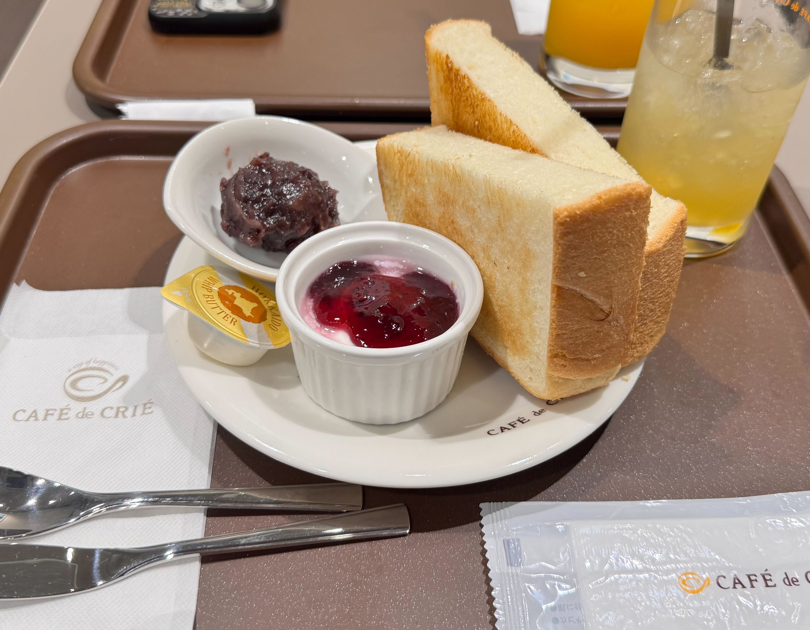
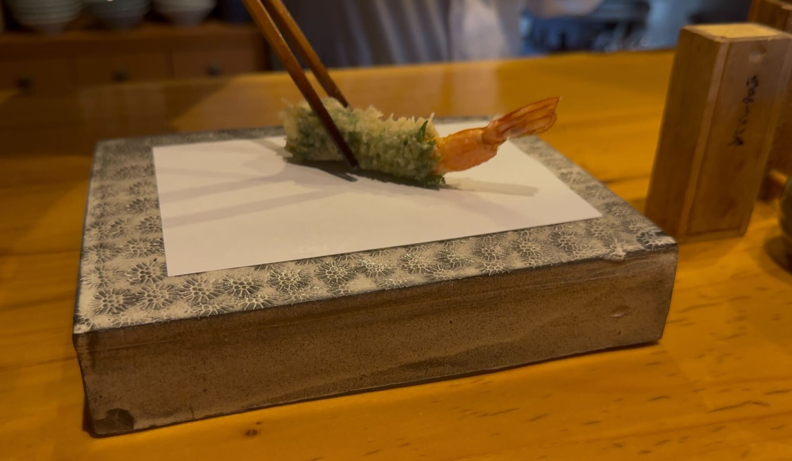

名古屋でいただくモーニング
今回の名古屋グルメ旅は、あえて少し早めに到着して、まずはモーニングからスタート。
訪れたのは名古屋駅から歩いてすぐの「Cafe de CRIE」さんです。
分厚めの焼き立てトーストを小倉マーガリンで頂きます。
朝にちょうどいいやさしい甘さでした。

===店舗情報===
店名: CAFE de CRIE
リンク: 公式ウェブサイト
住所: 愛知県名古屋市中村区椿町15-2 名古屋ミタニビル 1F
上質な食材を職人がていねいに揚げる、コスパ最強の天ぷらランチ
ランチに訪れたのは、天ぷら「よこい」さん。
穏やかな旦那様と、明るい雰囲気の奥様が営む、温かみのあるお店です。
カウンターで待っていると、アツアツ揚げたての天ぷらが次々と目の前に置かれていきます。
薄くて軽い衣に包まれた食材、素材の良さがそのまま伝わってくるような一品ばかりです。
それぞれの天ぷらに合わせて、お塩や大根おろし入りのつけ汁など、食べ方が丁寧に案内されるのも印象的でした。
炊きたてのお米と天ぷらの香り、そして食材の旨みが合わさって、ひと口ごとに満足感があります。
これだけ贅沢な天ぷらをたくさんいただけて、料金は2500円。コスパ最強の天ぷらランチでした。
ぜひまた訪れたいお店で、次はディナーでも伺ってみたいです。

===店舗情報===
店名: 天ぷら よこい
リンク: 食べログページ
住所: 愛知県名古屋市守山区幸心1-1319
炭火で香ばしい！ジュワっと広がる鶏の旨み！「備長扇屋」
夕飯は「備長扇屋」へ。
こちらは地元・浜松でもよく訪れる焼き鳥チェーンで、旅先でも同じ味が楽しめるのが嬉しいお店です。
焼き鳥は中まできちんと火が通っていて、
表面はカラっと中には旨味が閉じこもっておりジューシーな味わいです。
特にもも串は一本110円とは思えない満足感。
炭火で焼かれた香ばしさがふわっと広がって、つい何本も食べたくなるおいしさでした。
旅先でいつもの味に出会えたことで、どこか安心感のある夕食になりました。
===店舗情報===
店名: 総本家備長扇屋 名古屋本店
リンク: 公式ウェブサイト
住所: 愛知県名古屋市中村区名駅3-15-8 名駅グルメプラザ 1F